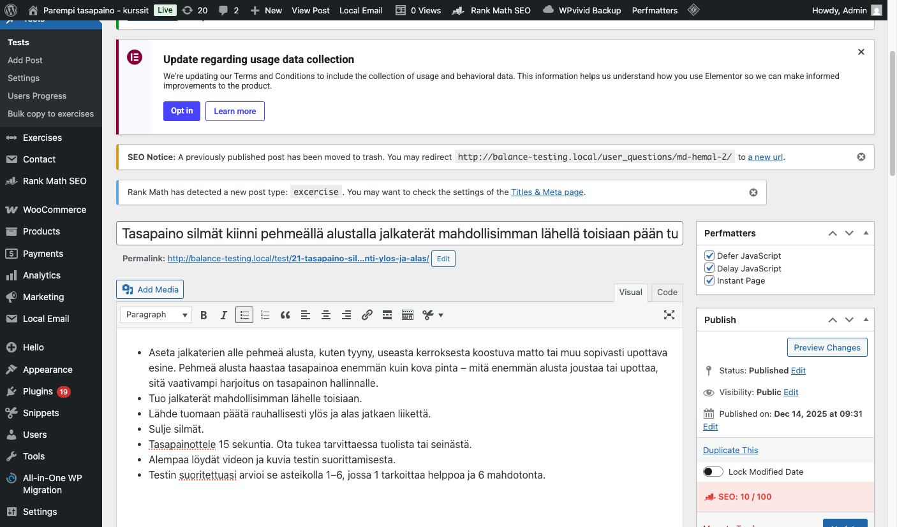
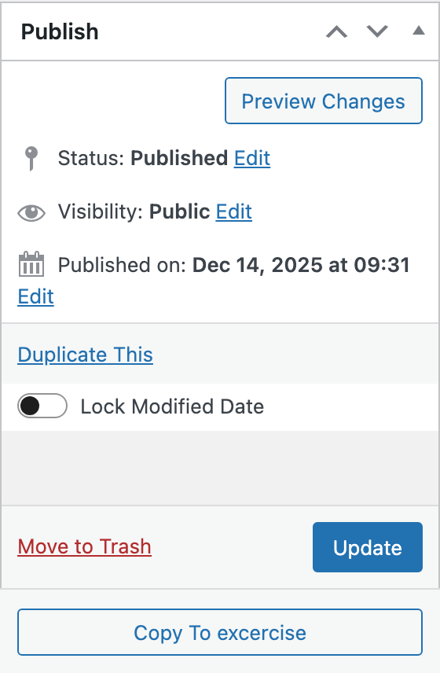
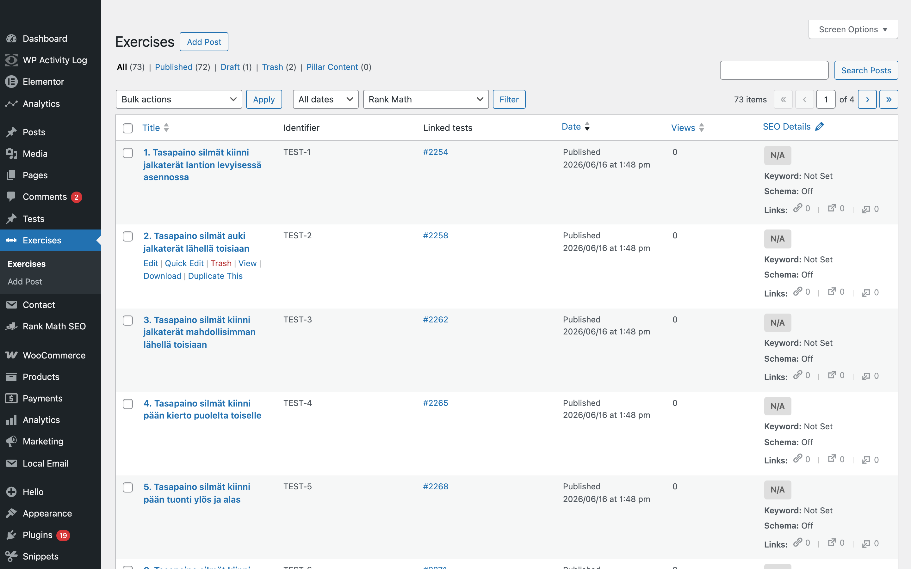
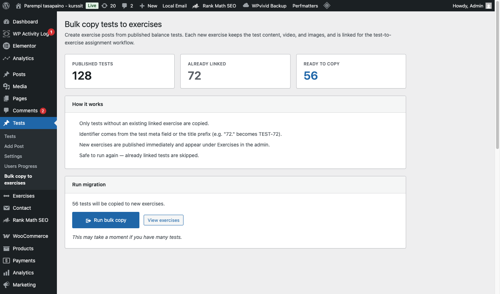
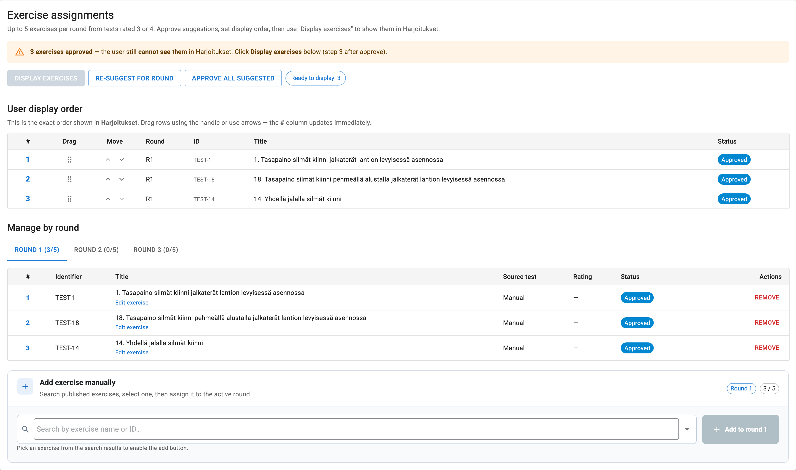
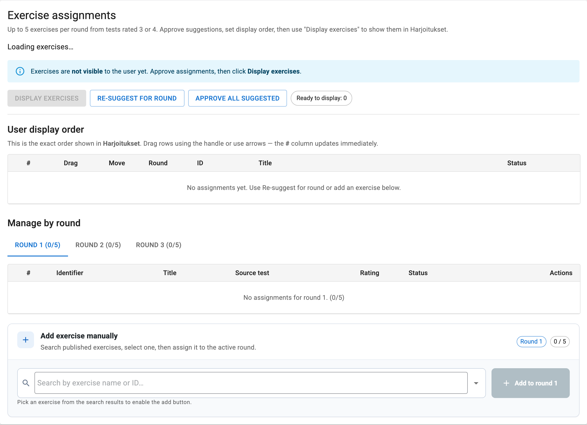
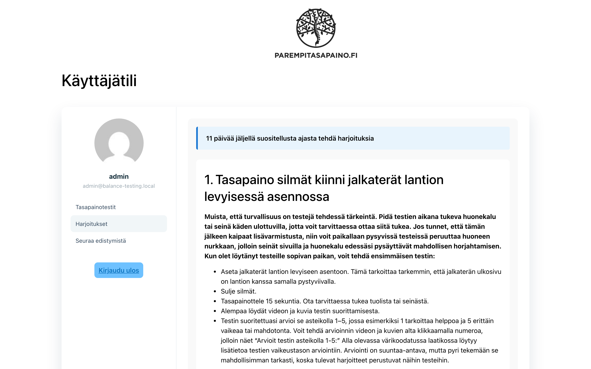
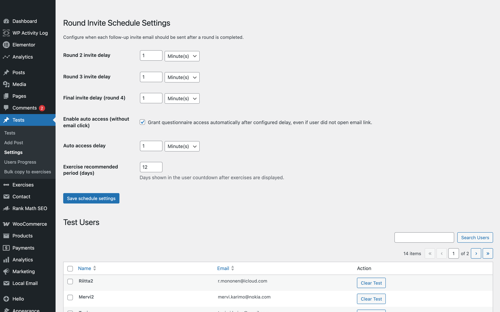
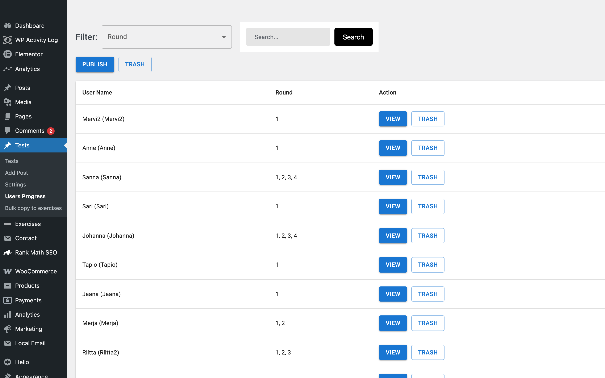
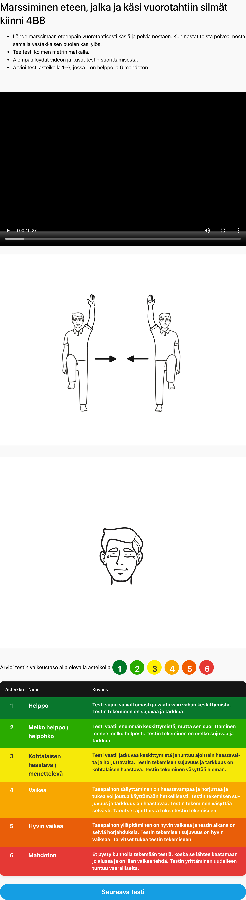

Getting started
This guide is for the person who manages the course on the website — you do not need programming knowledge. You work in two places: the WordPress admin (backend) and the public website (what participants see).
Where to log in
| Who | Where | What for |
|---|---|---|
| You (administrator) | Your site address + /wp-admin/ | Create tests & exercises, view progress, approve exercises, change settings |
| Course participant | /omatestaus/ (login) → /bt-user-account/ (account) | Do balance tests, read exercises, fill progress forms |
Two content types you manage
- Tests — balance assessments shown to participants. Each has instructions, video, photos, and a difficulty scale (1–6).
- Exercises — training content linked to a test. When a participant rates a test as moderately difficult (3 or 4), the matching exercise can be suggested for them.
▶ Video walkthrough (~3 minutes)
Full Balance Testing workflow with clear American narration. Each spoken line matches the screenshot on screen — no zoom, no on-screen text overlays.
Beat-synced narration · full screenshot visible · Download MP4
1. What this system does
The Balance Testing system runs a personalised balance course for each participant over several rounds. They rate how difficult each test feels; you review and publish their exercise program; the system sends timed follow-up emails for the next round.
Words you will see
| Term | Plain meaning |
|---|---|
| Test | A balance assessment the participant performs and rates. |
| Exercise | Training instructions (often video + text) shown after you approve and display them. |
| Round | One testing period: Round 1 (first tests), Round 2, Round 3, then final progress questions. |
| Rating 1–6 | How hard the test felt. Ratings 3 and 4 are the most important — they choose exercises and next-round tests. |
| Harjoitukset | Finnish for “Exercises” — the tab where participants see their approved program. |
| Tasapainotestit | Finnish for “Balance tests” — where participants do and rate tests. |
| Alkukysely | Initial questionnaire before the first test round. |
2. Full journey — start to finish
Read this once to understand the whole course flow. Details for each step are in the sections below.
Create a balance test Admin
A test is what the participant sees on Tasapainotestit: instructions, video, reference table, and rating buttons.
Step-by-step
- Go to Tests → Add Post (or open an existing test under All Tests).
- Title — short name shown in admin lists (often Finnish).
- Main content area — full written instructions: how to stand, safety notes, what to do. Use the same text participants should read.
- Scroll to custom fields below the editor (added by Advanced Custom Fields):
- Test scale — which 1–6 reference table to show. Choose one:
- Balance — general balance difficulty
- Eyes — eye-movement tests
- Coordination — coordination tasks
- Strength — strength-based tasks
- Habituation — habituation / adaptation scale
- Video — embed URL and/or upload a demonstration video. At least one video helps participants.
- Images — optional step-by-step photos.
- Test scale — which 1–6 reference table to show. Choose one:
- Menu order (right sidebar, under Page Attributes or similar) — controls order in Round 1 when tests are drawn from the general pool. Higher number = shown earlier in Round 1.
- Click Publish (or Update if editing).
- Immediately create the matching exercise — see next section.

Rating scale — how 1–6 works
The participant chooses the number; the system does not calculate a score from sensors. Their choice is saved once per test per round and drives exercises and next-round tests.
What each rating means (balance scale example)
| Rating | Label (FI) | Meaning | What the system does |
|---|---|---|---|
| 1 | Helppo | Very easy, little effort | Test not offered again in later rounds |
| 2 | Melko helppo | Easy with some focus | Test not offered again in later rounds |
| 3 | Kohtalaisen haastava | Moderate challenge, doable without support | Counts toward round end (6 needed); suggests exercise; priority in next rounds |
| 4 | Vaikea | Hard, may need brief support | Same as 3 — exercise suggestion + priority re-test |
| 5 | Hyvin vaikea | Very hard, needs support most of the time | No exercise from this rating alone; test returns in next round for re-testing |
| 6 | Mahdoton | Cannot do safely — red on screen | Test permanently removed for this participant |
How ratings are counted during a round
- Each time they finish a test, one rating is stored for that test in the current round.
- They cannot rate the same test twice in the same round.
- The system counts how many ratings are 3 or 4 in this round.
- When that count reaches 6 (default), the round stops — even if they have not done 43 tests yet.
- Alternatively, the round stops when they complete 43 tests (Rounds 1–2) or 42 tests (Round 3), or when no suitable tests remain.
How the next test is chosen
The website shows one test at a time. Which test appears next depends on the round.
Round 1 — discovery round
- Tests come from your full published library that the participant has not done yet in Round 1.
- Order follows menu order you set on each test (higher number = shown earlier).
- Tests they rate 1, 2, or 6 will not appear again in later rounds.
Round 2 — re-test priority tests
- First, tests they rated 3, 4, or 5 in Round 1 come back — in the same order they originally rated them.
- After those are done, other eligible tests may appear from the general pool.
- Tests rated 1, 2, or 6 in Round 1 stay excluded.
Round 3 — final test round
- Similar priority: tests rated 3, 4, or 5 in earlier rounds are re-tested first (order preserved).
- Then remaining eligible tests if needed until the round ends.
Exercises — overview & workflow Admin
An exercise is the training program linked to a balance test. When a participant rates a test as 3 or 4, the matching exercise can be suggested for them — but only if you created and published it first.
The exercise lifecycle (your steps)
- Setup (once) — For each test, use Copy To excercise or Bulk copy to create exercise posts. Publish all exercises.
- After each round — System suggests up to 5 exercises (from 3/4 ratings). You get an email.
- Review — Open Users Progress → VIEW → Exercise assignments. Approve, reorder, or add manually.
- Publish to participant — Click Display exercises. They see Harjoitukset and get email.
All exercise screenshots at a glance






Link test to exercise — full process Admin
A balance test is what the participant rates (1–6). An exercise is the training content you show them afterward. Linking means the system knows which exercise belongs to which test — so when someone rates a test as moderately difficult (3 or 4), the correct exercise can be suggested automatically.
At a glance — the full journey
Phase 1 — Create the link (one-time, before or after course start)
You do not link exercises to participants manually. You link each test post to its exercise post once. The system reuses that link for every participant who rates that test.
| Method | When to use | What happens |
|---|---|---|
| Copy To excercise | You added or changed a single test | Creates one new exercise draft from that test. Copies title, text, video, images, and settings. Opens the exercise for you to review and publish. |
| Bulk copy to exercises | Initial setup — many tests have no exercise yet | Copies every published test that still lacks a linked exercise. Skips tests already linked. Publishes new exercises automatically; review content afterward. |
Detailed click-by-click steps: Create from test (Copy To excercise) · Bulk copy (initial setup)
Phase 2 — What the link actually is (how the system remembers it)
When you copy a test to an exercise, the plugin stores the connection in two ways. You never edit these by hand — they are set automatically.
| What you see in admin | What it means |
|---|---|
| Linked test column (on Exercises list) | Shows the test ID this exercise was copied from — the primary link. |
| Linked test column (on Tests list) | Shows the exercise ID connected to that test (or — if missing). |
| Identifier column (e.g. TEST-72) | A shared code on both test and exercise. Used as a backup if the copy link is ever missing. Assigned automatically during copy or bulk copy (often from the test title number, e.g. “72. …” → TEST-72). |
Phase 3 — How the link is used when a participant finishes a round
This happens automatically — no admin action required until suggestions appear.
- Participant completes tests in a round and rates each one 1–6.
- When the round ends, the system collects every test they rated 3 (Vaikea) or 4 (Melko vaikea).
- For each such test in the order they rated them, it looks up the linked exercise.
- If a linked exercise exists and is published, it adds a Suggested row in Users Progress → Exercise assignments (max 5 exercises per round).
- If the test has no linked exercise, that rating is skipped — no row is created, and the system tries the next 3/4 rating.
- You receive an email asking you to review suggested exercises.
Phase 4 — After suggestions: approve and show to participant
The link gets the right exercise into the suggestion list. You still control whether the participant sees it:
- Open Tests → Users Progress → VIEW → Exercise assignments.
- Approve suggested rows (or Approve all suggested).
- Reorder with arrows or drag — top row = first on Harjoitukset.
- Add manually if needed (search by name or identifier) — useful when a test had no link at rating time but you fixed it later.
- Click Display exercises — only then does the participant see Harjoitukset and get the “exercises ready” email.
Phase 5 — Verify every test is linked (checklist)
- Go to Tests → All Tests.
- Confirm every published test shows a value in Linked test (not —).
- Go to Exercises → All Exercises.
- Confirm each exercise shows Linked test and an Identifier.
- For any gap: edit the test → Copy To excercise, or run Bulk copy for remaining unlinked tests.
- Publish any exercise still in draft status.
Phase 6 — Troubleshooting links
| Problem | Likely cause | What to do |
|---|---|---|
| No exercise suggestions after a round | No 3/4 ratings, or rated tests have no linked exercise | Check ratings in Users Progress. Fix missing links with Copy To excercise or Bulk copy, publish exercises. Future rounds will work; past round may need manual add in Exercise assignments. |
| Copy To excercise button missing | Test is draft/trash, or exercise already exists | Publish the test first. Check Tests list Linked test column — if linked, edit the existing exercise instead. |
| Linked test shows — on Tests list | Exercise never created for that test | Copy To excercise on that test, or run Bulk copy. |
| Suggestion exists but wrong exercise | Wrong test linked, or duplicate exercises | Check Identifier and Linked test on both posts. Delete wrong exercise assignment row; add correct exercise manually if needed. |
| Participant sees waiting message on Harjoitukset | Exercises approved but not displayed | Click Display exercises in Users Progress. See Display to participant. |
Summary — who does what
| Step | Who | Action |
|---|---|---|
| Create test ↔ exercise link | You (admin) | Copy To excercise or Bulk copy; publish exercises |
| Store & look up link | System | Linked test ID + Identifier on both posts |
| Rate tests 3 or 4 | Participant | During Tasapainotestit in each round |
| Match ratings to exercises | System | Up to 5 suggestions per round from linked exercises |
| Approve, reorder, display | You (admin) | Users Progress → Exercise assignments → Display exercises |
| View Harjoitukset | Participant | After you click Display exercises |
Create exercises from tests Admin
This is Option A for creating the test ↔ exercise link — one test at a time. For the complete end-to-end process (setup through participant display), see Link test to exercise (full process).
Each published test needs a linked exercise. When a participant rates that test as 3 or 4, the system can suggest that exercise for them. Without a linked exercise, no suggestion is created for that rating.
Option A — One test at a time (best for new tests)
- Open Tests → All Tests and edit a published test.
- In the right Publish box, below the blue Update button, click Copy To excercise.
- Confirm. A new exercise opens as a draft with the same title, text, video, and images copied from the test.
- Read through the exercise, adjust wording if exercises should differ from test instructions, then click Publish.
The same button appears on the Tests list: hover a row and click Copy To excercise in the action links.
How to check the link is correct
- On Tests → All Tests, columns Identifier and Linked test help you verify links.
- On Exercises → All Exercises, each row shows which test it came from.
- An automatic ID (e.g. TEST-72) is assigned when needed so you can find exercises quickly when adding them manually later.
Bulk copy (initial setup) Admin
This is Option B for linking many tests at once. See Link test to exercise (full process) for how links are used after setup.
Use this once during initial setup or when many tests still lack exercises.
- Go to Tests → Bulk copy to exercises.
- Review the stats: published tests, already linked, ready to copy.
- Click Run bulk copy. Only tests without a linked exercise are copied.
- Open View exercises to review and publish new exercise posts.
Edit an exercise Admin
You can change exercise content anytime without affecting past participant ratings.
- Go to Exercises → All Exercises.
- Click the exercise title to edit.
- Update title, instructions, video, or images — same fields as tests.
- Click Update.
Approve exercise suggestions Admin
When a user completes a test round, the plugin auto-suggests up to 5 exercises per round — one per distinct test rated 3 or 4 that has a linked exercise post.
What the statuses mean
| Status | What it means for you |
|---|---|
| Suggested | System created this row automatically — review and approve or delete. |
| Approved | You accepted it — ready to show the participant when you click Display exercises. |
| Visible | Participant can see it on the Harjoitukset tab. |
How suggestions are built
- When a round ends, the system looks at every test the participant rated 3 or 4 in that round.
- For each such test (in the order they rated them), it adds the linked exercise — up to 5 exercises total per round.
- If they rated a test 3 or 4 but that test has no linked exercise, that rating is skipped (no row created).
- If they had no 3 or 4 ratings in the round, no suggestions are created — you may add exercises manually.
Your review steps
- Open Tests → Users Progress → VIEW for the participant.
- Open the Exercise assignments panel and select the correct round tab (Round 1, 2, or 3).
- Read each suggested row. Click Approve on good ones, or delete rows you do not want.
- Or click Approve all suggested to accept every suggestion at once.
- Reorder using ↑ ↓ arrows or drag — top row = first exercise the participant sees.
- Add manually if needed: search by exercise name or ID; manually added exercises are approved automatically.
Display exercises to the participant Admin
Approving exercises prepares them; Display exercises is what actually shows them on the website and sends the participant an email.
- In Users Progress → user detail, make sure at least one exercise is Approved.
- Click the blue Display exercises button.
- The participant receives email: Harjoituksesi ovat valmiina (Your exercises are ready).
- On their account, the Harjoitukset tab lists exercises in your chosen order.
- A countdown shows recommended days left to do exercises (default 12 days from Settings).
Hide exercises again
Click Exercises invisible to hide them from the participant without deleting your approved list. You can display again later.
Harjoitukset — participant view Participant
Before you click Display exercises, this tab shows a waiting message. After you display, they see their personal program in the order you set.
- Open Harjoitukset on their account (/bt-user-account/).
- Read the countdown: X päivää jäljellä suositellusta ajasta tehdä harjoituksia.
- Follow each exercise in your chosen order (video + instructions).
- At 0 days, exercises remain visible — they are not hidden automatically.
Exercise countdown & timing Admin
Go to Tests → Settings to control round email delays and the Harjoitukset countdown.

Round invite schedule
| Setting | Default | What it does |
|---|---|---|
| Round 2 invite delay | 12 days | After Round 1 ends, when participant gets email for progress + Round 2 tests |
| Round 3 invite delay | 12 days | Same after Round 2 |
| Round 4 / final invite delay | 12 days | After Round 3 — final progress questionnaire |
| Auto access delay | 10 days | Participant can open progress form automatically even without clicking email (optional path) |
| Exercise recommended period | 12 days | Countdown on Harjoitukset tab (“X days left…”). At zero, exercises stay visible. |
Reset one participant (support only)
At the bottom of Settings, if you need to wipe one person’s test history (e.g. restart their course), enter their user ID and click Clear Test. Use carefully — ratings and progress are deleted.
Add course participants Admin
Participants do not sign up on the website themselves. You create each account in WordPress.
- In WordPress admin, go to Users → Add New.
- Choose a username and password (or generate a strong password).
- Enter their email — used for round invitations and “exercises ready” messages.
- Role: usually Subscriber (normal course participant).
- Click Add New User.
- Send the participant:
- Login page: your site + /omatestaus/
- Their username and password (secure channel)
Users Progress dashboard Admin
Tests → Users Progress is the main dashboard for following each participant.

Open a user
- Click VIEW on a user row.
- The detail page shows:
- Progress summary and ratings history
- Per-round test limits (optional overrides)
- Exercise assignments (approve, reorder, display)
Per-round limits (optional, per participant)
Most users use defaults. You can override for one person if clinically needed:
| Setting | Default | Effect |
|---|---|---|
| Max tests (round 1–2) | 43 | Maximum tests user can complete in that round |
| Max tests (round 3) | 42 | Same for final test round |
| 3/4 threshold | 6 | How many ratings of 3 or 4 end the round early (also triggers a notice to you if below this when round ends) |
Click Save limits or Clear overrides to return to defaults.
Participant experience — overview
This is what your course members see after you give them a login. They use the public website — not the WordPress admin.
Login Participant
- Open the login page: your website address + /omatestaus/
- Enter the username and password you created for them.
- After login they go to /bt-user-account/ (Käyttäjätili).
- Forgot password works on the same page — they do not use a separate WordPress login screen.
Tasapainotestit (balance tests tab) Participant
One test is shown at a time. The participant should read instructions, watch the video, perform the test safely, then choose how difficult it felt.
- Open Tasapainotestit.
- Read instructions and watch the demonstration video.
- Perform the test (have support nearby if needed).
- Tap a number 1–6 that matches the reference table on screen.
- Click Seuraava testi (next test) to continue.
The reference table depends on the test type you chose when creating the test (balance, eyes, coordination, strength, or habituation). Level 6 — Mahdoton is shown in red — means the test felt impossible or unsafe to attempt.
When their round ends
They see a thank-you screen. They cannot start new tests until the next round opens (via email after the waiting period). They should:
- Wait for your email when exercises are ready (after you click Display exercises).
- Wait for the next-round invitation email (~12 days by default).

Progress check-in (Seuraa edistymistä) Participant
Opens when they receive the scheduled email between rounds (or when auto-access time is reached). Answers appear in Users Progress when you view that participant.
- Symptom strength (0–10) — oireiden voimakkuus
- Impact on function (0–10) — vaikutus toimintakykyyn
- Exercise days per week (1–5)
- Exercise frequency per day (1–4)
Submit with Lähetä lomake. Answers appear in admin user detail progress tables.
When rounds start and end
Three ways a round can end
- Six ratings of 3 or 4 — most common early finish (default threshold: 6).
- Maximum tests reached — 43 in Round 1, 43 in Round 2, 42 in Round 3.
- No tests left — every remaining test is excluded (all rated easy, impossible, or already done).
What happens immediately when a round ends
- Participant sees “round complete” on Tasapainotestit — no more tests until next round email.
- Up to 5 exercises suggested from 3/4 ratings (if linked exercises exist).
- You receive email to review exercises.
- Next-round participant email is scheduled (default 12 days later).
- If they had fewer than six 3/4 ratings, you also get a low-rating notice — the course still continues; follow-up email is still sent.
Full round timeline
| Stage | Participant | You (admin) |
|---|---|---|
| Round 1 | Alkukysely → rate many tests | Approve & display exercises |
| Wait ~12 days | Do Harjoitukset, get email | Monitor progress in Users Progress |
| Round 2 | Progress form + re-test priority tests | Approve & display new exercises |
| Wait ~12 days | Same pattern | Same |
| Round 3 | Final test round | Final exercise approval & display |
| After Round 3 | Final progress questionnaire | Review outcomes in user detail |
Emails you and participants receive
| Recipient | When | |
|---|---|---|
| Round 2 / 3 / 4 invite | User | After round ends; delay from Settings (default 12 days). Includes login link. |
| Low 3/4 count notice | You (admin) | Round ended with fewer than six ratings of 3 or 4 — informational; course still continues. |
| Review suggested exercises | You (admin) | When automatic exercise suggestions are created — go to Users Progress. |
| Harjoituksesi ovat valmiina | Participant | When you click Display exercises. |
| Round completed notice | You (admin) | When a participant finishes a test round. |
FAQ & troubleshooting
No exercise suggestions appeared
- Participant had no ratings of 3 or 4 in that round, or
- Those tests do not have a published linked exercise — see Link test to exercise (full process) to fix missing links.
Test and exercise are not linked
- Check Linked test column on Tests → All Tests and Exercises → All Exercises.
- Create the link with Copy To excercise (one test) or Bulk copy to exercises (many tests).
- Publish the exercise — draft exercises do not appear in suggestions.
- Full walkthrough: Link test to exercise (full process).
Harjoitukset is empty for the participant
- You approved exercises but did not click Display exercises, or
- You clicked Exercises invisible — display again to show them.
Copy To excercise button missing
- Test must be Published (not draft or trash).
- An exercise may already exist — check Exercises list and Linked test column.
Participant says they cannot start next test
- Their round may be complete — check Users Progress for current round and rating count.
- They may have already rated that test this round — system shows a Finnish message preventing duplicate ratings.
- Next round opens via scheduled email after the waiting period.
Wrong exercise order on frontend
Reorder in Exercise assignments before or after displaying — order in the admin panel is the order on Harjoitukset.
Want to restart one participant from scratch
Tests → Settings → enter their user ID → Clear Test. Only use when you intentionally reset their course data.
Quick checklists
Before the course goes live
- Create and publish all balance tests (video, instructions, test scale).
- Create and publish all exercises (Bulk copy or Copy To excercise per test).
- Check Tests and Exercises lists — every test should show a linked exercise.
- Set timing in Tests → Settings (delays, exercise countdown).
- Create participant accounts in Users → Add New.
- Send each participant the login URL and credentials.
Every time a participant finishes a round
- Check your email for exercise review request.
- Tests → Users Progress → VIEW.
- Approve, reorder, add or remove exercises.
- Click Display exercises.
- Confirm Harjoitukset looks correct (log in as them or ask them to check).